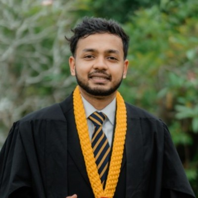

Computer
architecture
The organization of computing systems, from individual components to the wider architecture.
RESEARCH ENGINEER · NUS SCHOOL OF COMPUTING
Exploring the architecture
behind better computing.
Computer architecture, memory-centric systems,
and the space where hardware meets software.

I'm a Research Engineer at the School of Computing, National University of Singapore.
My research interests connect computer architecture, memory-centric hardware systems, and hardware–software co-design. I'm interested in how these pieces come together to shape computing systems.
University of Moratuwa
Exploring computing through its building blocks, its memory, and the interfaces between them.
The organization of computing systems, from individual components to the wider architecture.
Hardware systems built around memory, and the movement of data through the computing stack.
Designing hardware and software together to find opportunities across traditional boundaries.
For research conversations and getting in touch.
agasthi31@nus.edu.sg